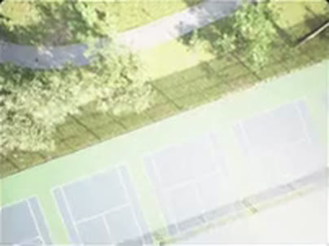
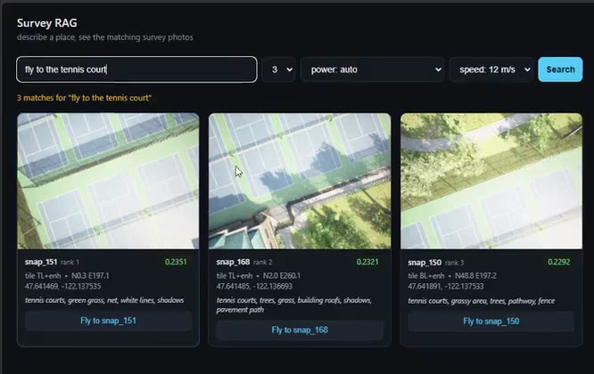

Aerial robotics · multimodal retrieval
Survey-RAG: Language-Queryable Aerial Memory
Turning a UAV survey into searchable spatial memory for post-hoc natural-language retrieval and relocation.
A UAV surveys an area once, indexing what it sees together with its spatial information. Later, an operator can ask natural-language questions such as “Where is the fountain?” or “Show me the flooded area” and retrieve the most relevant surveyed location before sending the UAV there.
Watch the demonstration Short video Benchmark
- Survey
- Store + index
- Searchable memory
- Natural-language query
- Retrieve
- Recover location
- Fly there
Survey-RAG turns a one-time UAV survey into a searchable spatial memory that can be queried in natural language and used to relocate the UAV to relevant locations.
- 44
- Human-labelled queries
- 0.93
- P@1 retrieval
- 7 / 8
- Successful retrieval-to-flight requests
- 3
- External real-world datasets
- 6×
- Flooded-scene enrichment
The survey and the closed-loop flights run in Microsoft AirSim with PX4 SITL. The three external datasets are real UAV imagery.
The problem
A Survey Is Usually Forgotten After It Is Completed
A UAV survey can capture hundreds of images and cover a large physical area, but once the survey is complete, answering a new question often requires manually inspecting those images, or flying the UAV again.
The problem is that the questions are not always known when the survey is conducted. An operator may later want to know:
A conventional detector can only answer questions about the object categories it was designed or trained to recognize. Survey-RAG takes a different approach:
Store the survey as searchable visual-spatial memory and ask the questions later.
The key idea
Survey Once. Ask Later.
Conventional workflow
- Question
- Detect
- Fly / search
The question has to exist before the flight.
Survey-RAG
- Survey once
- Store visual + spatial memory
- Question later
- Retrieve
- Relocate
The operator does not need to know the query at the time of the survey.
UAV survey
- Image + GPS
- Image + GPS
- Image + GPS
- Image + GPS
Spatial memory
- Visual embeddings
- Spatial metadata
- Survey imagery
Natural-language query
“fly to the tennis court”
Retrieval

Relevant image + location
UAV relocates
to the retrieved location
Why not just use a detector?
Open-Vocabulary Retrieval Instead of a Fixed Detector
A detector-based system can be very effective when the objects of interest are known in advance. But post-hoc survey analysis creates a different problem.
The operator may ask about something that was not anticipated when the survey was planned. Survey-RAG therefore treats the survey imagery as a searchable visual memory rather than committing the system to a fixed list of object classes.
Survey-RAG does not require the query vocabulary to be fixed when the survey is performed.
How it works
From Image to Spatial Memory
- 01Survey
The UAV flies a planned survey and captures nadir imagery. Each image is associated with its spatial information.
- 02Index
The images are converted into visual embeddings using SigLIP2 and stored together with the survey location.
- 03Query
An operator submits a natural-language request, such as “the fountain” or “flooded area after a hurricane”.
- 04Retrieve
The query is matched against the indexed imagery, returning ranked candidate images and their locations.
- 05Verify
For ambiguous matches, a VLM is used selectively to verify the candidate.
- 06Relocate
The retrieved location becomes a flight target and is sent to the simulated UAV.

The retrieval system
Visual Retrieval + Selective VLM Verification
The retrieval system uses visual embeddings as the primary search mechanism.
Survey images are indexed once, allowing future queries to search the stored representation rather than reprocessing the entire image collection with a detector for every new question. An embedding search answers in milliseconds, while the OWLv2 detector baseline has to re-sweep the corpus at about 1.3 s per image for each new query.
For ambiguous retrievals, where the margin between the top two candidates is thin, a VLM is invoked as a verification step.
Why tiles?
Preserving Small or Localized Objects
Aerial imagery introduces a scale problem. An object can occupy only a small portion of a large nadir frame, so a single global embedding may underrepresent it.
To preserve localized information, each survey image is represented using the full frame together with four spatial quadrants. This gives the retrieval system both global context and localized visual detail.
A real result: for “fly to the tennis court”, the best match inside snap_151 came from its top-left tile (reported as tile TL+enh in the interface).
The winning tile also helps locate the object inside the retrieved footprint: it gives the flight target a quarter-footprint offset toward the matching region.
One Image Can Be Misleading
Aerial imagery can also produce appearance-related retrieval failures. For example, glare caused raw imagery to make water resemble pale grass.
Rather than assuming one preprocessing operation would solve every query, I indexed both raw and deglared renderings and allowed the query to select the more useful representation.
The benchmark
Does the Retrieved Image Actually Match the Query?
To evaluate retrieval independently of the system’s own captions, I created a human-labelled benchmark of 44 natural-language queries and compared the hybrid retrieval system against several baselines.
| Method | P@1 | P@3 | R@10 | MRR |
|---|---|---|---|---|
| Hybrid retrieval * | 0.93 | 0.79 | 0.86 | 0.95 |
| SigLIP2 embeddings only | 0.86 | 0.73 | 0.86 | 0.92 |
| OWLv2 detector | 0.68 | n/a | n/a | n/a |
| BM25 captions | 0.64 | 0.55 | 0.60 | 0.72 |
* Hybrid = SigLIP2 embedding retrieval plus a caption keyword bonus. The VLM verification step is used at query time in the live system and is not part of this benchmark’s scoring. 41 of 44 queries retrieved the correct image at rank 1; 95% bootstrap CI [0.84, 1.00].
Research lesson
The Benchmark Changed the Conclusion
One of the most important lessons came from evaluating the system incorrectly the first time.
My initial benchmark used pseudo-ground-truth derived from the system’s own captions. Under that evaluation, BM25 appeared to perform extremely well (0.85 P@1), because the evaluation target was effectively built from the same representation being tested.
I therefore rebuilt the benchmark using human-labelled ground truth across the survey images.
This was a useful reminder that retrieval systems need evaluation targets that are independent of the representation being evaluated.
Real-world generalization
Does It Transfer Beyond the Original Survey?
I also evaluated the retrieval approach on three external UAV imagery datasets without retuning the retrieval system for each dataset.
| Dataset | Content | Ground truth | Result |
|---|---|---|---|
| ODM Aukerman | 77 real geotagged nadir frames (Ohio) | VLM judge | P@1 1.00 (12 / 12) |
| Semantic Drone | 400 urban nadir images, 6000×4000 | Official 24-class masks | P@1 0.90 |
| FloodNet | 398 Hurricane Harvey UAV images | Official masks + flood split | P@1 0.73 |
SigLIP2 retrieval on the external datasets.
The results show that the retrieval representation can transfer across different aerial imagery collections rather than being limited to the original survey.
FloodNet: Searching for Scenes, Not Just Objects
This illustrates the difference between searching for a specific object and searching for a semantic scene or condition. The 6× is enrichment of flooded scenes in the retrieved set, not a 6× accuracy gain.
From retrieval to action
A Retrieved Image Becomes a Flight Target
Retrieval alone does not complete the task. The goal of Survey-RAG is to connect the retrieved visual memory back to the physical world.
Every indexed image is associated with its survey location. Once a relevant image is retrieved, its spatial information can be converted into a target for the UAV, which then flies back toward the location represented by the retrieved image.
- Query“fly to the tennis court”
- Retrieved image
- Image + GPS
snap_150
47.641891
−122.137533 - Target location
GPS →
PX4 position
setpoint - UAV flight
- Object in view
Example from the demonstration video; frames and coordinates are taken from the real interface and simulation.
Closed-loop demonstration
From Language to Flight
The eight requests below were issued to the real retrieval pipeline, which selected spatial targets and passed them to a simulated vehicle in AirSim with PX4 SITL. The results measure closed-loop system behavior in simulation, not real-drone flight performance.
The failure
The System Also Shows Where the Approach Breaks
The system failed on the picnic-table request.
This was consistent with a limitation already visible in the retrieval benchmark: very small objects can occupy too little of the aerial frame to produce a reliable representation.
The failure therefore connected the retrieval benchmark to the end-to-end flight experiment: the weak retrieval produced the wrong target, which then produced the wrong flight destination.
- Request“picnic table”
- RetrievalRanked poorly
- TargetWrong location
- Flight99.1 m off, not in view
Resolution, Not an Abstract “AI Limitation”
The current limitation is strongly related to object scale. Objects occupying roughly less than 1% of the frame were difficult for the configurations tested.
In the picnic-table example, different retrieval configurations still ranked the object poorly, and the captioner never named it, so no keyword bonus could rescue it.
This suggests that the limiting factor is partly the resolution at which the object is represented in the aerial image. On FloodNet’s full-resolution imagery, small-object queries scored 1.00.
The most direct ways to address this are:
What I learned
The Hardest Part Was Not Retrieval
The project began as a retrieval problem, but several of the most important lessons came from how the system was evaluated.
- The benchmark itself must be independent of the retrieval representation.
- A higher retrieval score is not enough: the retrieved result must still correspond to a useful physical location.
- The same representation can support very different queries, including objects, places and scene-level conditions.
- Retrieval quality and physical navigation are coupled: a retrieval error becomes a navigation error once the system acts on the result.
Survey-RAG is ultimately about connecting semantic retrieval to physical action.
The research contribution
What Survey-RAG Adds
Questions can be asked after the UAV has completed the survey.
The survey is represented as searchable visual memory rather than a fixed list of detector classes.
Retrieved imagery is linked to the physical location where it was captured.
The retrieved location can be converted into a UAV navigation target.
language → memory → location → action
The system closes the loop from language to memory to location to action.
Next step
From Searchable Memory to More Capable Aerial Agents
The current system assumes that the UAV first completes a survey and answers questions afterward. The next step is to investigate how searchable aerial memory can support more capable autonomous agents.
Instead of only answering “Where was it?”, future systems could reason about:
This creates a bridge between aerial retrieval, multimodal reasoning and autonomous action.
Implementation details
Survey pattern. Snap centres are planned one camera footprint apart (about 60×45 m) and flown serpentine with yaw locked, so image-up is North in every frame and snaps do not overlap. The benchmark survey contains 192 snaps.
Flight control. PX4 treats every position setpoint as a stop, so waypoints are placed only at lane ends and captures are triggered by position. Cruise speed is held along each lane and the vehicle brakes only at the turns.
Index. Each snap is embedded as 5 tiles (full frame plus four quadrants) under 2 renderings (raw and deglared), max-pooled at query time. Deglaring fixed the water queries but pushed the picnic-table snap from rank 24 to 54, which is why both renderings are kept.
Backbone choice. A 7-query pilot suggested CLIP and SigLIP2 were roughly equivalent. At 44 queries the gap widened: 0.68 versus 0.86 overall, and 0.25 versus 0.75 on compositional queries.
Grading. The benchmark uses three independent grading systems (human labels, official segmentation masks, and a VLM judge from a different model family than the retriever), which agree on 15 of 17 overlapping verdicts. On absent objects, the OWLv2 baseline showed the highest false confidence of any method tested (0.77 versus 0.52).
Survey once
Survey Once. Remember What You Saw.
Survey-RAG explores a simple idea: a UAV should not have to forget everything it saw once the survey is over.
By associating aerial imagery with spatial information, the survey becomes a searchable memory. Natural-language queries can retrieve relevant scenes, and those retrieved locations can be connected back to UAV navigation.
The result is a pipeline from language → visual memory → spatial retrieval → physical action.
Watch the demonstration Explore the benchmark View other robotics projects